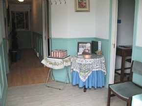

Certified Bookkeeping / Payroll / QuickBooks
Setup-Service-Support-Solutions
Educator & Coach for: Document Recognition, Record Keeping Practices, QuickBooks

Certified Bookkeeping / Payroll / QuickBooks
Setup-Service-Support-Solutions
Educator & Coach for: Document Recognition, Record Keeping Practices, QuickBooks

Kate has been an active bookkeeper and payroll practitioner since 2000 achieving certification as a Payroll Compliant Practitioner through the CPA, certified Professional Bookkeeper with IPBC, certified QuickBooks Pro Advisor and a TSheets certified Pro.
Kate's background extends from working with the family furniture manufacturing business prior to embarking on her own journey to discover her forte.
Kate has a core understanding from many sides of the spectrum derived from a diverse choice of professions over the years in roles as restaurant manager, assembly line labourer, machine operator, shipper/receiver, social committee leader, administrative manager, dabbling with IT and remote access veering into natural healing attaining certification as a forklift operator, forklift trainer and reflexologist.
Kate's innate leadership abilities and willingness to accept challenging projects with positive results has earned her the respect as a hard working, dependable and knowledgeable individual. Ultimately the hands on experiences of past employments pointed to a common denominator in her recognizing the value for organized documentation, transparent record keeping along with her interest in the ever evolving career associated technologies. This realization brought about the desire to pursue a more focused career path that would satiate her passions in her fields of expertise while bringing to her client's businesses above and beyond service, support and training for effective administrative processes delivering competency and compliancy within the GAAP (Generally Accepted Accounting Principles).
From hobby to home based business Kate has patiently and methodically grown her independent practice establishing roots in a brick and mortar location boasting a relaxed, warm and welcoming environment for clients and employees.
Kate's personability, professionalism, responsiveness, high level of integrity, quality of work and expertise partnered with her commitment to continuous learning, translates into a trusting, supportive and reliable relationship she builds with her clients.
Off the clock Kate enjoys visiting the many local conservation park areas for a nature walk, shared quality time with close friends and partaking in local festivals. In-between tax time and year ends, Kate welcomes travelling opportunities to foreign lands exploring new cuisines, cultures, music and always looking to integrate with some business associated educational tidbit to bring back home. Kate is no stranger to carpentry and gardening tools which keeps her immersed in home improvement and yard beautification projects with her beloved cat by her side.
A onetime from scratch set up or file restructuring. Ongoing support and services, or an as needed basis. Give Kate a call or send her an email for a free consultation to discover your record keeping needs and best suited options for your company
